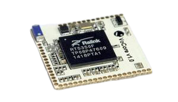

VoCore2 encore plus petit
La Vocore2 joue sur un autre tableau que la raspberry. En effet cette carte mère
est de la taille d’une pièce de monnaie (25.6mm x 25.6mm) et pousse le miniaturisme
à son maximum.

Avec ses 128mb de RAM, il faudra lui connectée via ses pins les différents composants
et connectiques dont vous aurez besoin. La carte nécessite donc un peu de connaissances
en électroniques pour s’en servir. La carte peut ainsi par ajout de modules se connecter
en wifi ou par ethernet.
Son prix moindre et sa taille en font un candidat idéale pour en faire un routeur personnalisé
ou des projets à faibles coûts d’IoT.
Au niveau de l’OS, ici on parle d’une distribution de linux open source propre au
nano-ordinateur.
La raspberry et la Vocore2 ne sont pas concurrentes mais agissent sur un marché différent
qui correspondent à d’autres besoins.